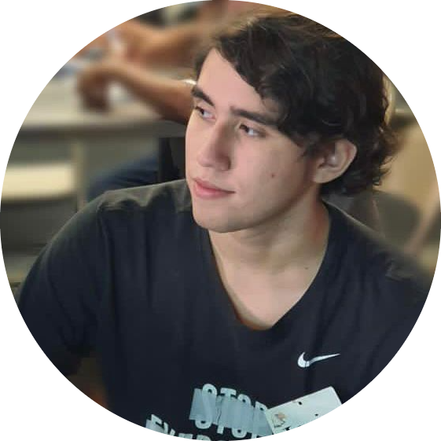

Hello my name is Javier Aviles, im 22 years old. I was born in El Salvador, since I was a little kid I used to play many video games, I always said to myself that it was something fantastic. I knew games where part of me, which is why I decided to be part of this community and make it my pasion.
Things I like to do with my spare time is listen to music, go for walks in the park, play some video games and I like to hang out with my friends. My goal is to give what I receive when I was little which was to always see the good in every problem and try to solve it before going to sleep.
This was my fourth project I did at University, my job for this project was to code and implement fisics on the game without a fisics engine. The name of the game is called "MISTY" this game is about a girl named Misty who has trouble sleeping and suffers from depression. She is always dreaming the same dream about being trapped on a cave. Mira is Misty's inner self, she always apperas in Misty's dream.
This was my first game project in which for the first time we started coding to create a game with other people. This game is called "The Curse of Sailor Jerry" its about a sailor with his parrot who end up with a curse. He is in an island in which he must find the cure to the curse. So he must adventure himself through some puzzles and dangers.